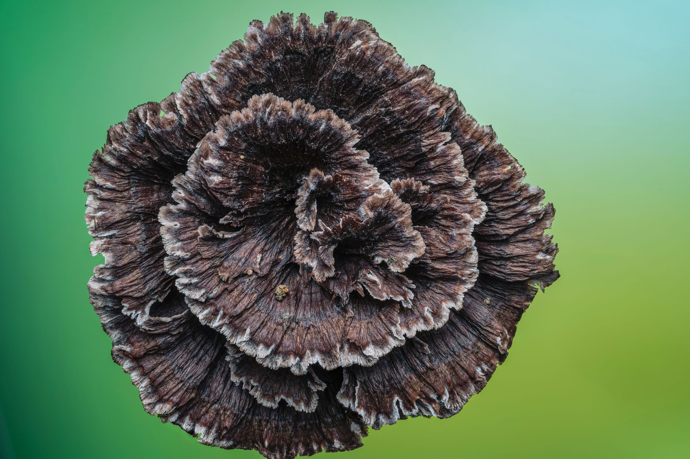

Inicio/Artículos/Suplementos · Mitos virales
Setas funcionales (lion's mane, reishi, cordyceps): qué dice la ciencia real
8 min de lectura · Actualizado 30 de agosto de 2026 · Por Miguel Lopez

Introducción
Cafés, chocolates y cápsulas con "setas funcionales" (lion's mane o melena de león, reishi, cordyceps) se han convertido en uno de los productos estrella del wellness de los últimos años y prometen desde mejor memoria hasta menos ansiedad y más energía. Este artículo explica qué son estos hongos, de dónde viene la moda y qué dice realmente la evidencia científica sobre cada uno, sin recomendaciones de uso.
Qué son las setas funcionales
Es un término de marketing que agrupa varias especies de hongos (lion's mane, reishi, cordyceps, cola de pavo, entre otros) usadas tradicionalmente en la medicina china y ahora vendidas como suplementos, polvos para café o infusiones. Cada una se asocia a una promesa distinta: lion's mane para la memoria y la función nerviosa, reishi para la calma y el sueño, cordyceps para la energía y el rendimiento físico.
Lion's mane: el que tiene la evidencia humana más sólida
El lion's mane contiene compuestos (hericenonas y erinacinas) que en teoría podrían favorecer el crecimiento de células cerebrales y la reparación nerviosa. El hallazgo más robusto en humanos proviene de un estudio con más de 50 adultos mayores de 50 años con Alzheimer leve, que a lo largo de 49 semanas mostró mejoras significativas en las puntuaciones de test cognitivos frente a placebo. Es un resultado prometedor, pero sigue siendo un solo estudio, en una población concreta (Alzheimer leve), no una prueba de que funcione para la memoria en población sana general.
Reishi y cordyceps: promesas con mucha menos evidencia en humanos
Para la calma y la ansiedad, un pequeño estudio de 2010 con mujeres en la menopausia encontró que el consumo diario de lion's mane durante un mes redujo la irritación y la ansiedad autoinformadas, pero la investigación en humanos sobre este uso concreto sigue siendo muy escasa. Un estudio de 2016 en personas con colitis ulcerosa, usando un suplemento multi-hongo con un 14% de lion's mane, mostró reducción de síntomas, pero el mismo estudio repetido en personas con enfermedad de Crohn no encontró diferencias frente a placebo. Sobre reishi y cordyceps específicamente para energía y rendimiento en personas sanas, la evidencia en humanos es, en conjunto, todavía más limitada que la del lion's mane.
En resumen, casi todo lo que se promociona sobre estas setas proviene de estudios en animales o en tubo de ensayo, no en personas. El hallazgo humano más sólido (lion's mane y Alzheimer leve) es prometedor, pero limitado a un estudio y una población concreta.
Lo que se sabe sobre su seguridad
No existen estudios en humanos que hayan examinado los efectos secundarios de forma exhaustiva. Los problemas notificados incluyen reacciones alérgicas (incluyendo dificultad respiratoria en casos raros), sarpullidos cutáneos, molestias abdominales y náuseas, sobre todo en personas con alergia a los hongos. Tampoco existe un consenso científico sobre una forma o cantidad estándar de uso, ya que los distintos estudios han empleado protocolos muy variados entre sí, otra señal de que la investigación en esta área todavía está en una etapa temprana.
Por qué se han vuelto tan populares pese a la evidencia limitada
Combinan varios factores atractivos para el marketing wellness: un origen "natural" con tradición milenaria, nombres exóticos y fáciles de viralizar, formatos cómodos (café, chocolate, cápsulas) y una promesa distinta para cada tipo de hongo que encaja con casi cualquier necesidad (energía, calma, memoria). Nada de eso, por sí solo, es evidencia de que funcionen; es, simplemente, un producto bien posicionado.
Conclusión
De las setas funcionales, el lion's mane es el que tiene el respaldo humano más sólido, aunque limitado a un estudio prometedor en Alzheimer leve, no una prueba general para la memoria en población sana. El resto de beneficios promocionados (calma, energía, rendimiento) se apoyan sobre todo en estudios en animales o en muestras humanas muy pequeñas. No son necesariamente perjudiciales para la mayoría de personas, pero tampoco están, por ahora, a la altura de lo que promete su marketing. Ante cualquier duda sobre si estos productos son adecuados para el caso de cada quien, lo que corresponde es una consulta con un profesional de salud, no el criterio de una etiqueta o un video viral.
- ¿Funciona el lion's mane para la memoria?
- Hay un estudio prometedor en más de 50 adultos con Alzheimer leve que mostró mejoras significativas en test cognitivos tras 49 semanas, pero es un solo estudio en una población concreta, no una prueba general para la memoria en personas sanas.
- ¿El reishi ayuda a dormir mejor?
- Se promociona para la calma y el sueño, pero la evidencia en humanos sobre este uso concreto es todavía muy limitada, apoyada sobre todo en estudios en animales.
- ¿Es seguro tomar setas funcionales todos los días?
- No hay estudios en humanos que hayan examinado los efectos secundarios de forma exhaustiva; se han notificado reacciones alérgicas, sarpullidos, molestias abdominales y náuseas, sobre todo en personas con alergia a los hongos. Cualquier decisión de uso debería consultarse con un profesional de salud.
- ¿Existe una dosis o forma de uso recomendada?
- No existe un consenso científico al respecto. Los estudios disponibles han usado protocolos y cantidades muy distintos entre sí, lo que refleja que la investigación todavía está en una etapa temprana: no hay una pauta de uso validada para la población general.
- ¿El cordyceps mejora el rendimiento deportivo?
- Es una de las promesas habituales de marketing, pero la evidencia en humanos sobre energía y rendimiento físico es, en conjunto, todavía más limitada que la del lion's mane.
- ¿De dónde viene la mayoría de la evidencia sobre setas funcionales?
- Casi todo lo que se promociona proviene de estudios en animales o en tubo de ensayo, no de ensayos clínicos en personas, que siguen siendo escasos y de tamaño pequeño.
- ¿Puede alguien con alergia a los hongos consumir estos productos?
- No es recomendable sin consultar antes con un médico, ya que los problemas notificados con más frecuencia incluyen reacciones alérgicas, sobre todo en personas con alergia a los hongos.
- ¿Merece la pena pagar más por café con setas funcionales?
- Según la evidencia disponible, la mayoría de beneficios promocionados no están confirmados de forma sólida en humanos, por lo que el precio elevado no está necesariamente justificado por resultados garantizados.
Preguntas frecuentes
Fuentes
Enlaces a la fuente original, para que puedas comprobarlo por tu cuenta.
Miguel Lopez
Periodista independiente, no profesional sanitario. Escribe sobre tendencias de salud y fitness citando siempre las fuentes primarias, para que puedas comprobarlo por tu cuenta. Más sobre el sitio.